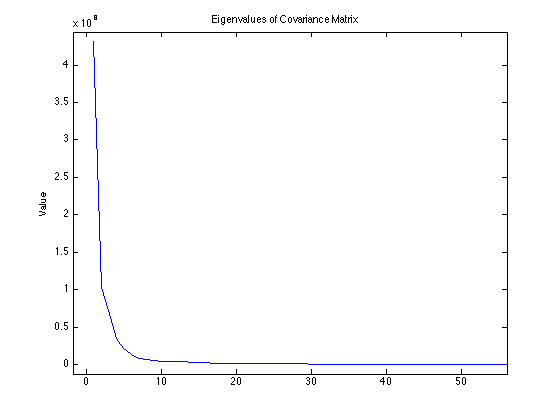
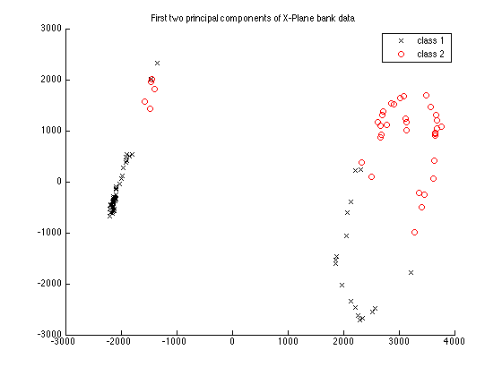
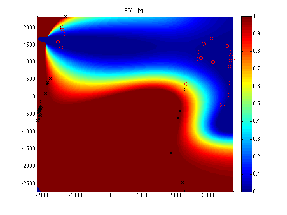

As a demonstration of a multivariate analysis technique I have formulated a classification task: Given screenshots of a cockpit in the flight simulator X-Plane, discriminate between left and right banking.
$$n=101 \text{ screenshots}$$ were taken at various points during simulated left and right turns, then hand-labelled as either 'left' or 'right'. These screenshots are 1180x800 8-bit RGB images, which can be represented using $$1180 \cdot 800 \cdot 3 = 2,832,000 \text{ values}$$
If we are to use these images as feature vector inputs to a supervised learner, we find that 2.8 million-dimensional vectors are too large for practical applications.
As an initial step, we may remove some redundancy in these images by converting them to 118x80 grayscale:
09:44 < ik> ik's principled guide to multivariate analysis: if the data is too big, just throw away a lot of it
This leaves us with screenshots resembling the following low-resolution grayscale images. These images can be represented as 9440-dimensional feature vectors, which are still rather large.
It is clear that these images still exhibit much redundancy. The cockpit interior, for instance, is mostly either constant across all images (the cowling and blank space between instruments), or noise (most of the instruments vary between screenshots but are not useful for determining bank direction). The sky is mostly featureless and the ground is noise (we do not care if we are looking at a runway or a pasture). The only element of these images we are interested in is the horizon (and possibly the artificial horizon instrument and the turn coordinator).
I made this problem easy by selecting only screenshots where the horizon was visible (ie, some sky and some ground was visible in each picture). So the slope of the horizon is a sufficient statistic for our task. (Had this not been the case, we would want to focus on the artificial horizon instrument).
We can, of course, write some heuristic to extract the important information from these images, but there is a general method.
Much has been written about PCA, so this section will only summarize the technique as I have implemented it in the solving of this problem. Here, we use PCA for dimensionality reduction: By selecting only the first s principal components, we can transform our d-dimensional data X to a s-dimensional subspace while retaining most of the variance of the data (thereby discarding some correlated variables (ie, redundancy) and noise). Of course, d >> s.
Given n observations of d-dimensional data X (the values of X are, in this case, pixel intensities represented as integers ranging from 0 to 255):
$$\mathbf{X}_{n \times d}$$We take the mean of each column and subtract from the data:
\begin{equation} \mathbf{\Psi} = \frac{1}{n}\sum\limits_{i=1}^n \vec{x}_i \end{equation} \begin{equation} \mathbf{\Phi} = \mathbf{X} - \mathbf{\Psi} \end{equation}A covariance matrix is computed:
\begin{equation} \mathbf{C} = \mathbf{\Phi}^\top\mathbf{\Phi} \end{equation}Note that this covariance matrix can be very large (d-by-d or, in our case, 9440 by 9440). In practise, other methods are used to find the first few principal components without computing the entire covariance matrix.
We find the eigenvalues and eigenvectors of the covariance matrix such that:
\begin{equation} \mathbf{V}^{-1}\mathbf{C}\mathbf{V} = \mathbf{\Lambda} \end{equation}where V is a matrix of d column vectors corresponding to the d eigenvectors of C, and Λ is a diagonal matrix with the d corresponding eigenvalues on its diagonal.
We can think of the high-eigenvalued eigenvectors as modelling the signal subspace in our data, and the low-eigenvalued eigenvectors as modelling the noise subspace. Alternatively we can think of the high-eigenvalued eigenvectors as axes along which our data has much variance. If we sort the eigenvalues and plot them, we have:

Note that I have zoomed in on the first fifty or so eigenvalues so as to show some detail. In reality there are 9440 of them. In most applications, the contrast between high values and low values is not nearly so sharp. So we have a good cutoff point, and we see that there are relatively few high eigenvalues, suggesting that the data is indeed mostly correlated.
While it may be advisable to select a few more, I let s = 2 to allow for visualization. So we take the two highest-eigenvalued eigenvectors and create a matrix which we can use to transform our data:
\begin{equation} \mathbf{U}_{d \times 2} = [\begin{array}{cc} \vec{\lambda}_1 & \vec{\lambda}_2 \end{array}] \end{equation}We may now project our data into this two-dimensional space and plot it:
\begin{equation} \mathbf{X}_f = (\mathbf{X} - \mathbf{\Psi})\times\mathbf{U}^\top \end{equation}
I have plotted data points corresponding to each class ('left', 'right') with different colours. So we see that even with only two principal components we can achieve fairly good separation (even a linear classifier would do well here).
Returning to our original problem. Given n observations of d-dimensional data X (screenshots) we should like to predict the class labels Y corresponding to 'right' and 'left' bank:
$$\mathbf{X}_{n \times d}, \; \vec{Y}_n$$Using LSPC, a fast non-linear supervised classifier, we may attempt to separate this data. I used 75 screenshots to train, and withheld 26 for testing.
By training LSPC on these 75 screenshots (projected into two dimensions), we find functions which estimate the posterior probability that a screenshot is a member of class Y = 1 or 2.
$$\text{find } \hat{P}(Y=1|x_i); \hat{P}(Y=2|x_i)$$The estimated posterior probabilities are plotted as a heatmap over the two-dimensional data (this plot actually shows the training data, not the withheld test data). We make our decision at P(Y|x) = 0.5

Using this model we estimate the class label for our 26 withheld examples and find that it correctly classified 25 of the 26 screenshots (corresponding to an error rate of about 3.85%).
{kind=link}
{kind=link}